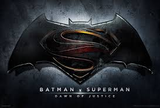
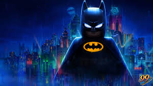
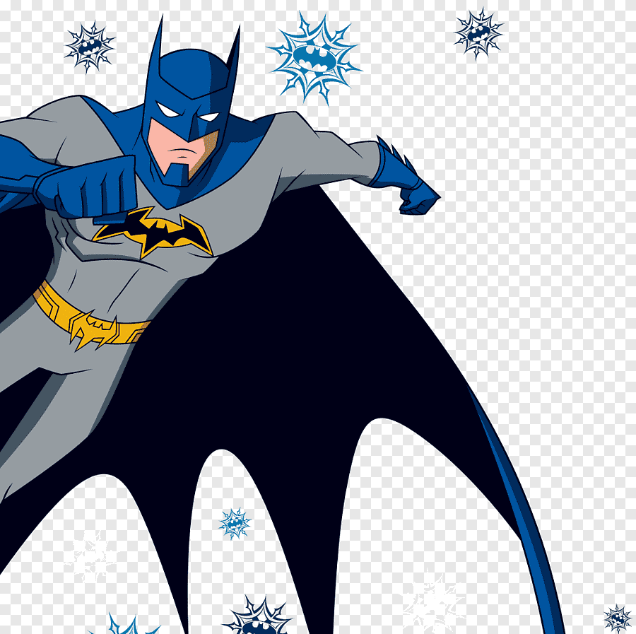

The Batman
La venganza es un arma de doble filo

Sinopsis Histórica
En su segundo año luchando contra el crimen, Batman se adentra en los rincones más oscuros de Gotham City para atrapar a un sádico asesino en serie conocido como Enigma. A medida que sigue un rastro de pistas crípticas, el hombre murciélago se ve obligado a desenterrar la corrupción arraigada que conecta a la élite de la ciudad con su propio pasado familiar, poniendo a prueba su mente y su sed de venganza.

Ficha Técnica
- Género: Acción / Suspenso / Neo-noir
- Año de estreno: 2022
- Director: Matt Reeves
- Actores principales: Robert Pattinson, Zoë Kravitz, Paul Dano
- Duración: 176 minutos
